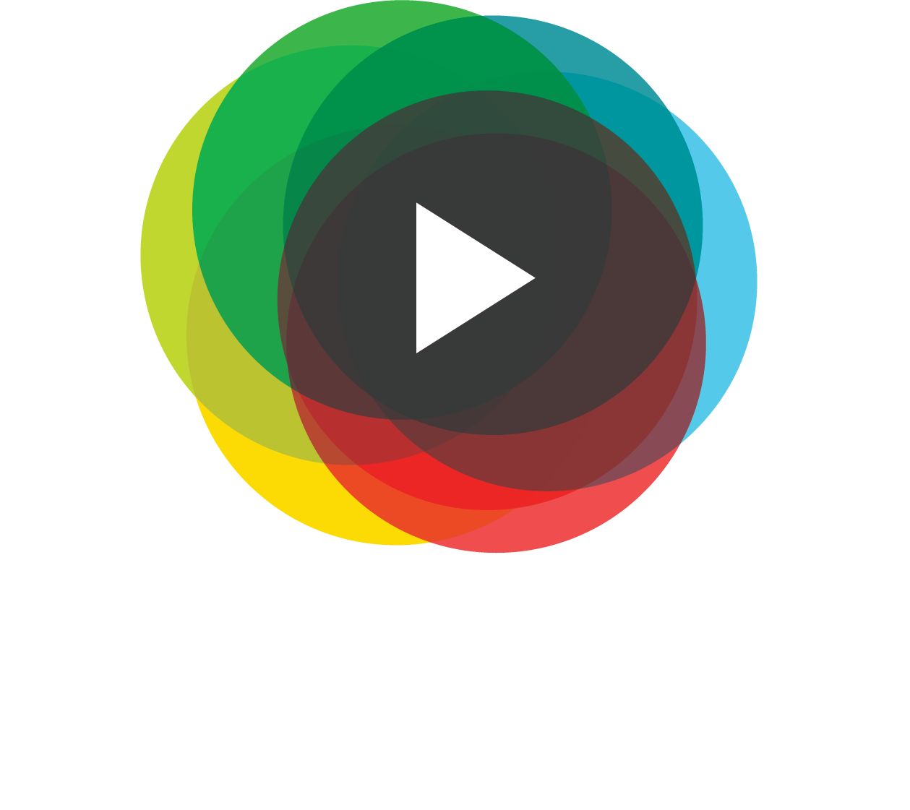
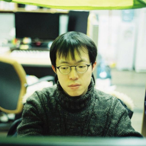
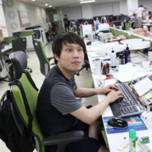
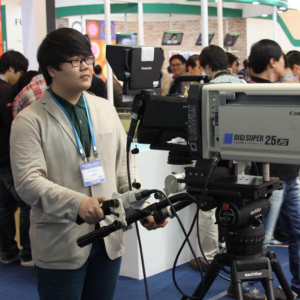
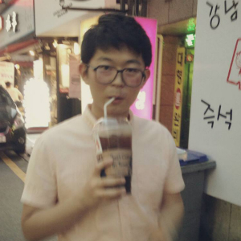

우리는 비디오를 보는 사람들의 공감을 연결하고 있습니다.
anbado video team 우리를 소개합니다
Mission 우리가 이 일을 하는 이유
우리는 비디오 위에 사람들의 생각을 담고 있습니다.
비디오를 볼 때 여러분은 어떻게 보시나요? 여러분의 친구들은 어떻게 비디오를 볼까요?
사람들은 많은 비디오를 봅니다. 하지만 비디오 그 너머에 있는 수없이 많은 목소리는 남겨지지 않고 사라져 버립니다. 똑같은 영상을 보고 같은 소리를 듣더라도, 여러분이 느끼는 감정과 머릿속에 떠오르는 생각은 모두 다릅니다. 그런 쏟아지는 감정과 생각들은 몇 초만 지나면 머릿속에서 사라지기 시작하고 몇 시간 후에는 없는 기억, 없는 감정이 될 수도 있습니다.
우리는 그런 흘러가는 기억, 지나가는 감정에 주목합니다. 여러분이 자각하지 못하고 흘려보내는 기억과 감정은 여러분도 모르는 사이에 모이고 쌓여 여러분에게 새로운 재미와 시각을 줄 것입니다. 안바도 팀은 여러분에게 순간순간의 감정, 그때그때의 생각을 기록할 수 있는 최고의 방법을 만들고자 합니다.
우리는 비디오를 보고 있는 사람들의 생각과 감정을 담아내고 싶습니다. 우리의 비전 속에서 비디오는 단순히 보는 것이 아닙니다. 여러분은 비디오에 당신의 감정의 흔적들을 남기고, 그것을 여러분의 소중한 사람들과 함께 나눌 수 있습니다.
우리는 여러분에게 동영상 제작자가 되라고 이야기하지 않습니다. 생각을 남기는 것은 무엇보다 쉬워야 하고, 생각을 나누는 것도 또한 그래야 합니다. 우리는 디지털 기술을 통해 여러분이 비디오에 참여할 수 있도록 할 것입니다.
우리의 이상을 현실로 만들기 위해 우리는 이런 생각을 하고 있습니다.
-
우리는 삶의 의미를 소중하게 생각합니다.
안바도의 서비스는 사용자들의 삶을 더욱 의미 있게 만드는 것을 목표로 합니다. 우리의 삶은 더욱 흥미진진하고, 의미있는 것이 될 수 있습니다. 안바도의 서비스들은 그러한 이상을 달성할 수 있다는 믿음으로 만들어지고 있습니다. 그리고 우리는 그 이상을 달성하기 위해 열정을 불태우고 있습니다.
-
자유로움과 즐거움의 문화가 공기처럼 소중하다고 생각합니다.
우리는 즐거움을 추구합니다. 우리 자신에게 즐거움이 소중하기에 그것을 여러 사람에게 전달하는 것이 가치 있는 과정이라는 것을 알고 있습니다. 우리는 자유로운 구성원들이 함께 즐거운 문화를 만들기 위해 노력하고 있습니다.
-
만드는 사람도 쓰는 사람도 함께 성장할 수 있습니다.
우리는 서비스를 만드는 사람뿐 아니라 쓰는 사람들도 함께 성장해 나갈 수 있다고 생각합니다. 우리는 더 좋은 가치들을 여러분께 전달하기 위해 노력할 것이며, 그 과정은 우리에게 즐거움의 과정이며 또한 성장의 과정입니다.
-
문제를 해결하는 첫 번째 과정은 그 문제를 인식하는 것입니다.
우리는 많은 실수와 부족함 속에서 성장해나갈 것입니다. 어쩌면 여러분의 마음에 들지 않을 수도 있고, 바보 같은 실수를 할지도 모릅니다. 만약 여러분이 우리에게 어떤 문제가 있다고 생각한다면 저희에게 알려주세요. 저희는 그 문제를 해결하기 위해 진심으로 노력할 테니까요.
Team 함께하는 사람들
안바도 비디오는 디지털 기술을 통해 시청각 정보전달 이상의 비디오 경험을 만들어나가는 크리에이터 그룹입니다. 현재 안바도 비디오는 미래창조과학부 주관 SW Maestro 3기 과정을 수료한 사람들을 중심으로 이루어져 있습니다. 팀원들의 프로필 이미지를 클릭하면, 보다 상세한 설명이 나타납니다.
- 
-
용휘 (Yonghui In)
유랑자 (Wanderer)
디자인 스튜디오 PLUGxIN의 대표이기도 한 용휘는 사람과 사람, 기술과 감성이 모였을 때 나오는 시너지와 즐거움, 재미를 찾아 유랑하고 있습니다. 단순히 시청하는 것 그 이상을 추구하는 안바도 팀과의 추구하는 것이 일치한다고 판단한 그는 안바도 팀에도 숟가락을 얹고야 말았습니다.
팀 내의 시각에 관련된 모든 것은 그의 손을 거쳐 가고 있습니다. 팀의 로고를 만들던 중 왠지 로고가 어두운 배경에서는 별로 일 것 같다는 치완의 얘기를 듣고 그 로고가 어두운 배경에 가장 잘 어울리는 로고가 되게끔 하며 치완을 할말없게 만든 이야기는 널리 알려져 있습니다.
- 
미종은 국민대학교 전자공학부 출신으로 임베디드 소프트웨어에 지대한 관심이 있었지만, 학수의 유혹에 넘어가 잠시 웹으로 외도하여 안바도 비디오의 플레이어 개발에 참여하고 있습니다.
스스로 배고픈 프로그래머라고 부를 정도로 팀 내에서도 굉장히 낮은 연비를 가지고 있으며, 버는 돈의 반을 밥값으로 쓰고 있습니다.
다른 팀원들은 많은 연료(=밥)를 소비하는 미종을 고급차종에 빗대어 람보르기니라고 하지만, 정작 미종 자신은 그냥 연비가 나쁜 똥차라고 얘기하곤합니다.
-
치완은 5살 때 아빠 몰래 게임을 하고자 컴퓨터를 켰다가 고장 내는 대형 사고를 저질렀고 그것을 수습하기 위해(…) 컴퓨터 계에 입문하였습니다. 그 후, 컴퓨터 좀 만져본 친구들은 다 한다는 정보올림피아드 공부를 하며 프로그래밍 실력을 쌓아나갔습니다.
겉모습으로나 말하는 모습으로나 그는 컴퓨터공학과를 다닐 것 같지만 놀랍게도 연세대학교 지구시스템과학과에 재학 중입니다.
데이터 분석을 해보고 싶지만, 가지고 있는 데이터가 없어 데이터가 있을 것 같은 곳에는 여기저기 기웃거립니다. 안바도 팀의 얘기를 듣고 난 후, 왠지 여기에는 데이터가 있을 것 같아 팀에 합류하게 되었습니다. 현재 안바도 비디오의 서버와 데이터 분석을 위한 시스템 구축을 담당하고 있습니다.
더불어 팀 내에서 단 음식을 좋아하기로 유명하며 '포유류는 원래 단 음식을 먹도록 설계되었다'는 주장을 하며 자신의 단 음식 섭취를 정당화하는 행위 또한 쉽게 관찰되고 있습니다.
-

현제는 이곳저곳 돌아다니기를 좋아합니다. 한 번에 한 가지만 하는 게 아니라, 일을 여러 개 벌이는 것을 좋아하죠. 헌데, 누가 충남사람 아니랄까 봐 벌여놓은 일 사이에서 빠릿빠릿하지 못하고 느긋하게 떠 댕깁니다. 그저 데이터의 바다에 누워서 느긋하게 낚싯대 하나 드리우고 있습니다. 그러다가 육지 일은 매번 잊어버린다고 주변 사람들한테 혼나곤 하죠.
현재 대학원에서 주로 연구하고 있는 머신 러닝과 안바도 팀에서 생성될 멋진 데이터를 엮어보고자 하고 있습니다. 어떻게 하면 좀 더 멋진 결과를 내놓을까 고민하고, 구글링하고, 논문도 많이 읽어봅니다. 그래서 매번 영어와 수학 공부를 좀 더 해야 했어라며 푸념합니다.
아, 그리고 먹는 것도 매우 좋아합니다. 맛집 데이터베이스를 가지고 있어, 지인들에게 맛집을 소개해 그들의 살을 찌우는 재미로 산다는 소문도 들려옵니다.
-
승원은 조화로움을 추구하는 개발자입니다. 소프트웨어 개발에 있어 모든 분야를 고루 잘한다기보다, 생활 속 어디에서나 소프트웨어가 함께 조화를 이루어 사람들이 더 즐겁게 살 수 있는 세상을 만들고 싶어합니다. 그렇기 때문에 개발 밖 분야에도 관심이 많습니다. 승원은 팀원들이 개발에만 힘쓰느라 무지했던 분야에 관한 최신 문물을 전달하며 개발 외적(?)인 도움에 힘쓰고 있습니다. 팀에서는 주로 이용자들이 서비스와 직접적으로 맞닿게 되는 프론트엔드쪽 개발을 맡고 있습니다.
승원은 팀 내 동생들에게 조언과 격려를 해주며는 팀의 분위기를 이끄는 좋은 형이 되고 싶어 하지만, 실제로는 더 철딱서니가 없어 장난을 좋아하는 어른애입니다.
-

창원에서 상경한 미드매니아인 세운은 전직 서울 시장님을 연상케하는 이름으로 인해 팀 내에서 '시장님'으로 불리기도 합니다. 세운은 제대하고 나서 프로그래밍을 시작한 후, 좋은 프로그래머가 되기 위해 무던히 노력해온 근성의 한국인이기도 합니다.
그는 '하면된다'의 정신을 적극 실천하는 개발자입니다. '개발하면 되지', '가면 되지', '먹으면 되지' 등의 다양한 방면의 응용이 있습니다.
세운은 팀 내에서 안드로이드 개발을
더불어 집사의 일도담당하고 있습니다.
Gift 세상에 내놓는 선물
Modac.TV
내 친구는 영상을 보며 무슨 생각했을까?
modac.TV는 영상에서 느끼는 순간의 감상들을 표현하고 특별한 친구들과 공유하는 서비스입니다. 여러분이 시청하며 표현한 감상들은 미리 지정한 친구들에게만 공유되며, 그 친구들이 나와 같은 동영상의 시점을 볼 때 화면에 나타납니다. 공감을 나누길 원하는 친구들을 초대해 영상을 보며 감상을 나눠보세요.
History 우리가 걸어 온 길
2013년 3월 안바도 비디오 팀 결성
2013년 5월 NIPA 공개소프트웨어 개발 지원사업 선정(과제 후 평가결과 : 우수과제)
2013년 7월 Microsoft Bizspark Startup
2013년 10월 D.camp Demoday
2013년 10월 Daum DevOn 참가
2013년 11월 감상시점 기반 동영상 서비스 modac.tv 베타 런칭
2013년 12월 SK telecom 웹앱 경진대회 우수상
2014년 1월 KOTRA 글로벌취업창업대전 창업쇼케이스 결선진출 및 창의벤처관 부스
2014년 3월 주식회사 안바도비디오 설립
2014년 4월 SK Planet / D.camp로부터 투자 유치
2014년 5월 modac.TV for iPhone beta 출시
2014년 9월 NIPA Startup Engine 참가
2014년 10월 MBN/ie Business school 주관 Seoul Ventureday 준우승
Alumni 안바도비디오와 함께했고 지금은 훌륭히 자신의 길을 걷고 있는 멋쟁이들을 소개합니다.
-

민욱은 자신을 개발자라기보다 서버 엔지니어에 가깝다고 생각하지만, 모두가 개발, 기획, 디자인에 의견을 내고 참여를 해야 하는 팀의 규칙에 따라 서버 개발자로 활동하고 있습니다. 원래는 C#을 사랑하는 C# 바라기였으나, SW Maestro 과정을 통해 Python을 접하고 나서 Python 덕후로 노선을 갈아타고 있습니다. 이후, 가능한 한 모든 프로그래밍을 Python으로 하려는 습성을 보이고 있으며 안바도 비디오의 서버 시스템이 Python으로 만들어지는데 지대한 공헌을 하였습니다.
구글이 소유하고 있는 IDC와 동등한 규모의 IDC를 소유하고자 하는 꿈을 가지고 있습니다. 민욱은 그 정도 꿈은 소박하다고 생각하지만, 팀원들은 별로 그렇게 생각하는 것 같지 않습니다. 서버용 장비 구매, 영상 관련 장비 구매, 카메라 구매 등을 취미로 즐기면서 매일 돈 나갈 곳이 너무나도 많다고 하소연합니다.
-

진수는 컴활, 워드 자격증을 가지고 있는 팀 내의 몇 안 되는 프로그래머입니다. 자격증을 가지고 있으면 컴퓨터 숙련자라고 고등학교 때까지 으스대다가 대학교에 입학한 후, 다른 세상을 맛보고 멘탈이 무너져 버렸습니다. 이후, '다들 대학 와서부터 시작할 거야'라는 희망찬 믿음을 가지고 한양대학교에서 컴퓨터 공학을 공부하였으나, 중고등학교 때 부터 공부를 시작하여 단련된 능력자들을 만나 또 멘붕하였습니다.
요즘은 그들을 따라잡기 위해 평일은 물론 주말에도 가방에 공부할 거리를 들고 다니며 실력 향상에 힘쓰고 있습니다. 덕분에 팀원들에게는 물론이요 주변 사람들에게도 무지 바쁜 사람으로 알려졌습니다. 안바도 팀 내에서는 클라이언트, 서버를 가리지 않고 스크립트가 들어가는 모든 부분에 많은 도움을 주었습니다.
아메리카노를 물과 같이 여길 정도로 좋아하여, 라X킹의 1리터 아메리카노를 출시를 적극 지지하는 입장입니다.
Help us! 우리를 도와주세요
아이디어는 평등합니다. 여러분의 아이디어도 우리 서비스의 발전에 큰 도움이 됩니다. 우리의 서비스를 사용하고 느낀 점을 우리에게 알려주세요!
학수는 문화적 상상력과 기술의 가능성을 바탕으로 한 새로운 서비스를 계획하는.... 됐고 그를 한 마디로 표현하자면 문화기술덕후입니다. 그는 즐겁게 작업한 아이디어들을 사람들의 삶에 스며들게 하는 데에 관심이 있습니다.
특히 학수는 자신의 작업물을 다른 사람들이 사용하는 것을 매의 눈으로 지켜보는 것을 즐깁니다. 학수는 안바도 비디오라는 생각의 씨앗을 많은 사람과 나누고 이야기하는 것을 좋아합니다. 가끔은 이야기를 너무 많이 해서 팀원들의 정신을 혼미하게 만드는 부작용이 있기는 하지만, 대개 학수의 수다는 무해한 것으로 알려져 있습니다. 이야기를 나누는 것을 좋아하는 그는 프로그래밍할 때에도 컴퓨터와 많은 이야기를 시도하는 것으로 알려져 있지만, 많은 경우 컴퓨터는 그의 바람을 들어주지 않는다고 전해집니다.